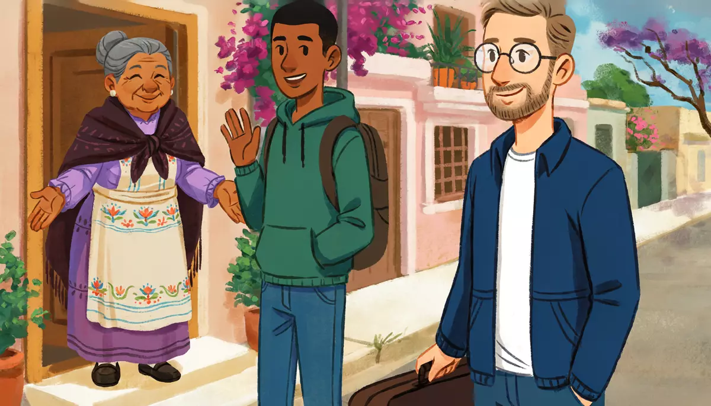

I can greet people, say goodbye, and spell my name, choosing tú or usted.Goal of this lesson · CEFR Sociolinguistic appropriateness A1; Overall spoken interaction A1
Paso 1 de 8
EscuchaListen
Listen to the conversation, then answer the questions.

Alex, a teacher from Chicago, arrives at the house in Mexico City where he is going to rent a room. The owner, Doña Lupita, opens the door with her grandson Diego. usted with Doña Lupita · tú with Diego
First listen without the text. Press Escuchar todo and answer the first question. Then show the Spanish text and listen again.
AlexSí, buenas tardes. Soy Alex Morgan. Y usted es la señora Cruz, ¿no?Yes, good afternoon. I'm Alex Morgan. And you're Mrs. Cruz, aren't you?
L
Doña LupitaSí, Guadalupe Cruz, pero todos me dicen Lupita. ¡Bienvenido!Yes, Guadalupe Cruz, but everyone calls me Lupita. Welcome!
A
AlexMuchas gracias. Mucho gusto, señora.Thank you very much. Nice to meet you, ma'am.
L
Doña LupitaIgualmente, joven. ¿Cómo está? ¿Qué tal el viaje?Likewise, young man. How are you? How was the trip?
A
AlexBien, gracias. Un poco cansado. ¿Y usted?Fine, thanks. A bit tired. And you?
L
Doña LupitaMuy bien, gracias. Mire, él es Diego, mi nieto.Very well, thank you. Look, this is Diego, my grandson.
D
Diego¡Hola! ¿Qué onda? ¿Cómo estás?Hi! What's up? How are you?
A
AlexHola, Diego. Bien, ¿y tú?Hi, Diego. Fine, and you?
D
DiegoBien, bien. Oye, ¿cómo se escribe tu apellido?Good, good. Hey, how do you spell your last name?
A
AlexEme, o, erre, ge, a, ene. Morgan.M, O, R, G, A, N. Morgan.
D
DiegoPerfecto. ¡Bienvenido a la casa!Perfect. Welcome to the house!
L
Doña LupitaPásele, pásele, joven. Está en su casa.Come in, come in, young man. Make yourself at home.
1
ChooseListen again and answer.
How is Alex after the trip?
Alex says usted to Doña Lupita but tú to Diego. Why?
What does Diego want to know?
Más tarde: later that evening
Alex goes out to buy a few things.
A
AlexDoña Lupita, voy a la tienda. ¡Hasta luego!Doña Lupita, I'm going to the store. See you later!
L
Doña LupitaHasta luego, joven. Que le vaya bien.See you later, young man. Take care. (lit. may it go well for you)
D
Diego¡Nos vemos, Alex!See you, Alex!
A
Alex¡Sí, nos vemos! ¡Adiós!Yes, see you! Bye!
1
ChooseAnswer the questions: Más tarde: later that evening
Which two phrases mean "see you (later)"?
Paso 2 de 8
FíjateNotice
Read how it works. Play the examples and repeat them aloud.
Tú or usted?
Spanish has two ways to say "you" to one person. Use usted with people who are older than you, people you don't know, and in shops and offices. Use tú with friends, family, children and people your age. If you aren't sure, start with usted: the other person will tell you if tú is fine («Háblame de tú»).
The verb changes with the pronoun: ¿Cómo estás? (tú) / ¿Cómo está? (usted). ¿Qué tal? works with both.
Meaning
tú informal
usted formal
How are you?
¿Cómo estás?
¿Cómo está?
And you?
¿Y tú?
¿Y usted?
You are…
Eres Diego.
Es la señora Cruz.
From the conversation:
Igualmente, joven. ¿Cómo está? ¿Qué tal el viaje?Likewise, young man. How are you? How was the trip?
¡Hola! ¿Qué onda? ¿Cómo estás?Hi! What's up? How are you?
Bien, gracias. Un poco cansado. ¿Y usted?Fine, thanks. A bit tired. And you?
In Mexico, people in shops and offices usually say usted to customers, even young ones. Answer them with usted too.
Greetings and answers
Buenos días until about noon, buenas tardes until it gets dark, buenas noches after dark (it also means good night). Hola works at any time. To answer ¿Cómo estás?: Bien, gracias, Muy bien, Más o menos (so-so), or Un poco cansado (a man) / Un poco cansada (a woman). Then ask back: ¿Y tú? or ¿Y usted?.
From the conversation:
¡Buenas tardes! Usted es Alex, ¿verdad?Good afternoon! You're Alex, right?
Hola, Diego. Bien, ¿y tú?Hi, Diego. Fine, and you?
Ser: soy, eres, es
yo soy · tú eres · usted es · él / ella es
Ser (to be) says who someone is. Soy Alex = I'm Alex. Él es Diego = This (he) is Diego: it's how you introduce someone. In Spanish you can leave out yo and tú: the verb already says who.
From the conversation:
Sí, buenas tardes. Soy Alex Morgan. Y usted es la señora Cruz, ¿no?Yes, good afternoon. I'm Alex Morgan. And you're Mrs. Cruz, aren't you?
Muy bien, gracias. Mire, él es Diego, mi nieto.Very well, thank you. Look, this is Diego, my grandson.
Spelling: ¿Cómo se escribe?
Letters have names. Most are easy to guess: a, be, ce, de, e, efe, ge, hache, i, jota, ka, ele, eme, ene, eñe, o, pe, cu, erre, ese, te, u, ve, doble u, equis, i griega, zeta. In Mexico, Y is usually i griega ("Greek i"); you will also hear ye. To spell a name, say the letters one by one. Listen to the whole alphabet:
From the conversation:
a, be, ce, de, e, efe, ge, hache, iA, B, C, D, E, F, G, H, I
jota, ka, ele, eme, ene, eñe, o, pe, cuJ, K, L, M, N, Ñ, O, P, Q
erre, ese, te, u, ve, doble u, equis, i griega, zetaR, S, T, U, V, W, X, Y, Z
Eme, o, erre, ge, a, ene. Morgan.M, O, R, G, A, N. Morgan.
B and V sound the same in Spanish, so Mexicans say be grande (big B) and ve chica (small V) to tell them apart: «Vázquez, con ve chica». H is always silent: hola sounds like "ola".
Paso 3 de 8
PracticaPractice
Do the exercises in order. They get freer as you go.
1
ChooseTú or usted? Choose for each person.
Your new landlady, who is 70.
A student your age at a party.
The pharmacist at the corner pharmacy.
Your friend's eight-year-old son.
2
Listen and chooseListen and choose the best answer.
Listen.
Show what they say
Mariana: ¡Hola! ¿Qué tal?
Listen.
Show what they say
Doña Lupita: Buenas noches, joven. ¿Cómo está?
Listen.
Show what they say
Rocío: Buenos días. Soy Rocío Garza. Mucho gusto.
Listen.
Show what they say
Diego: Bueno, me voy. ¡Nos vemos!
3
Type the missing wordsComplete with soy, eres, es, estás or está.
Hola, yo Alex.
Hi, I'm Alex.
Señora, ¿usted Guadalupe Cruz?
Ma'am, are you Guadalupe Cruz?
Mire, él Diego, mi nieto.
Look, this is Diego, my grandson.
¿Tú Diego? ¡Mucho gusto!
Are you Diego? Nice to meet you!
Hola, Mariana, ¿cómo ?
Hi, Mariana, how are you? (a friend)
Buenos días, doña Lupita. ¿Cómo ?
Good morning, Doña Lupita. How are you?
4
Listen and chooseListen to the spelling. Which name is it?
Listen.
Show what they say
Narradora: jota, o, ese, e
Listen.
Show what they say
Narradora: ce, a, erre, ele, o, ese
Listen.
Show what they say
Narradora: ge, u, a, de, a, ele, u, pe, e
Listen.
Show what they say
Narradora: ve chica, a, ele, e, erre, i, a
5
Put the words in orderPut the words in order.
Nice to meet you, ma'am.
How do you spell your last name?
Fine, thank you. And you?
6
Say it in SpanishNow you. Say it in Spanish (or type it).
It's 4 p.m. Greet an older woman and ask how she is.
Buenas tardes, ¿cómo está?
Greet a friend your age and ask how he or she is.
Hola, ¿cómo estás?
Answer: fine, thanks, a bit tired. And you? (to a friend)
Bien, gracias, un poco cansado. ¿Y tú?
A woman says cansada.
Ask someone how to spell it.
¿Cómo se escribe?
You're leaving. Say "see you later".
Hasta luego.
7
Your own sentencesWrite a short conversation.
It's 9 a.m. You meet Doña Lupita in the kitchen. Write a short conversation of 5 lines: you greet her, she asks how you are, you answer and ask back, she answers, and you say goodbye.
Show a model answer
Tú: Buenos días, doña Lupita.
Lupita: Buenos días, joven. ¿Cómo está?
Tú: Muy bien, gracias. ¿Y usted?
Lupita: Bien, gracias.
Tú: Bueno, hasta luego.
Check your answer:
Paso 4 de 8
PalabrasWords
Listen to each word and repeat it. Then do the quick check.
Saludosgreetings
holahi, hello
buenos díasgood morning
buenas tardesgood afternoon
buenas nochesgood evening / good night
¿Qué tal?How are things?
¿Cómo estás?How are you? (tú)
¿Cómo está?How are you? (usted)
Respuestasanswers
bien, graciasfine, thanks
muy bienvery well
más o menosso-so
un poco cansado, un poco cansadaa bit tired (m / f)
¿Y tú? ¿Y usted?And you? (tú / usted)
mucho gustonice to meet you
igualmentelikewise
Despedidasgoodbyes
adiósgoodbye
hasta luegosee you later
nos vemossee you
hasta mañanasee you tomorrow
que le vaya bientake care (usted)
Personaspeople
el señor, la señoraMr., Mrs. / sir, ma'am
el joven, la jovenyoung man, young woman
el nieto, la nietagrandson, granddaughter
el apellidolast name
bienvenido, bienvenidawelcome (to a man / a woman)
That evening, Alex gets a message from a number he doesn't know.
WhatsApp chat
+52 55 …Hola, Alex. Soy Diego, el nieto de Lupita. 👋
Alex¡Hola, Diego! ¿Qué tal?
DiegoBien. Oye, mi abuela pregunta: ¿cenas con nosotroswill you have dinner with usa las ochoat eight?
Alex¡Sí, claro! Muchas gracias. 😊 ¿Y tu abuela cómo está?
DiegoMuy bien, gracias. Oye, ¿cómo se escribe tu nombre? ¿Alex con equis?
AlexSí: a, ele, e, equis. Y mi apellido es Morgan, con ge.
DiegoPerfecto. Mi abuela dice: ¡Bienvenido a la familia!Welcome to the family! Nos vemos a las ocho. ¡Hasta luego!
Alex¡Gracias! ¡Nos vemos!
Words with a dotted underline have a translation: tap or hover.
1
ChooseAnswer the questions about the text.
Who writes to Alex?
What does Doña Lupita want to know?
What does Alex answer?
What does Diego ask Alex?
Paso 6 de 8
CulturaCulture
Read about the culture behind the language.
Greetings in Mexico
When people meet in Mexico, men usually shake hands, and friends add a hug with a pat on the back (an abrazo). Women, and men greeting women they know, often give one light kiss on the right cheek. When you arrive somewhere, you greet everyone: walking past without a buenas tardes feels rude.
Older people are often called don or doña + first name: don Chuy, doña Lupita. It is respectful and warm at the same time. Shop staff may call you joven (young man / young woman) whatever your age, and güero or güera if you have light hair or skin; it is friendly, not rude.
If you don't hear something, Mexicans say ¿Mande?: a polite "Pardon?". ¿Qué? alone can sound blunt.
Elsewhere: In Spain, people greet with two kisses, one on each cheek. In Argentina and Uruguay one kiss is normal, even between male friends, and people say vos instead of tú (labeled: Río de la Plata Spanish).
Sources
Instituto Cervantes, Plan curricular, «Saberes y comportamientos socioculturales (relaciones sociales: saludos y tratamientos)».
Real Academia Española, Diccionario panhispánico de dudas (2005): «don, doña».
El Colegio de México, Diccionario del español de México (DEM): «mandar» (the courtesy formula ¿mande?).
1
ChooseCheck: what did you learn?
You didn't hear what Doña Lupita said. What's the most polite thing to say?
Paso 7 de 8
Tu turnoYour turn
Now use it: do the role play, then write.
Role play: Your first day at Doña Lupita's
You arrive at your new room in Mexico City. Doña Lupita and her grandson Diego open the door. Use usted with Doña Lupita and tú with Diego.
You
Greet Doña Lupita (it's the afternoon) and say who you are.
Answer how you are and how the trip was; ask how she is.
Greet Diego and ask how he is.
Spell your last name when Diego asks.
Say thank you and goodbye.
Doña Lupita y Diego
Lupita greets you and asks if you are the new guest.
Lupita asks how you are and how the trip was.
Lupita introduces Diego; Diego says hi.
Diego asks how to spell your last name.
They welcome you and say goodbye.
1. Listen to a model
One way the conversation could go. Listen, then try it yourself without looking.
L
Doña LupitaBuenas tardes. ¿Usted es el joven de Chicago?Good afternoon. Are you the young man from Chicago?
A
AlexSí, buenas tardes. Soy Alex. Mucho gusto, señora.Yes, good afternoon. I'm Alex. Nice to meet you, ma'am.
L
Doña LupitaMucho gusto. ¿Cómo está? ¿Qué tal el viaje?Nice to meet you. How are you? How was the trip?
A
AlexMuy bien, gracias. Un poco cansado. ¿Y usted?Very well, thanks. A bit tired. And you?
L
Doña LupitaBien, gracias. Él es Diego, mi nieto.Fine, thanks. This is Diego, my grandson.
A
AlexHola, Diego. ¿Qué tal?Hi, Diego. How's it going?
D
Diego¡Bien! Oye, ¿cómo se escribe tu apellido?Good! Hey, how do you spell your last name?
A
AlexEme, o, erre, ge, a, ene.M, O, R, G, A, N.
D
Diego¡Gracias! Bienvenido.Thanks! Welcome.
2. Record yourself
Say your part aloud (pause the model after each of Doña Lupita y Diego's lines), or answer the questions in the role card. Then play it back and compare.
3. Practice with an AI partner (optional)
Copy this prompt into ChatGPT or Claude, switch on voice mode, and have the conversation. It plays Doña Lupita.
Stuck? Say «ayuda» and it gives you a hint in English, then carries on.
Finished? Say «terminamos» and it gives you feedback in English: what you did well, your mistakes, and useful phrases for next time.
Let's practice Spanish (Mexican Spanish, level A1). You are Doña Lupita, 71, a warm grandmother from Oaxaca who has lived in Mexico City for 50 years and rents a room in her house in the Narvarte neighborhood. Use "usted" with me. Your grandson Diego, 21, lives with you, but he isn't home right now.
I am your new lodger, arriving at your front door with my suitcase in the afternoon.
Rules:
- Speak only Spanish, short turns (1-2 sentences), simple language for an A1 learner. Speak slowly and use very common words.
- Greet me, check my name, ask how I am and how the trip was, ask me to spell my last name for your notebook, and say goodbye. Use only greetings, names, "how are you", spelling and goodbyes.
- You play only this one person. Never speak as anyone else, and don't describe what other people say or do.
- If I make a mistake, don't stop me: repeat what I said correctly in your answer (for example: if I say "¿Cómo estás, señora?", you answer "Bien, gracias. ¿Y usted, cómo está?").
- Once, spell my last name back to me with one wrong letter, so I have to correct you.
- When I say "ayuda", step out of the role play for a moment: in English, give me a short hint about what I could say next, with one or two short Spanish options, then continue the role play where we were.
- When I say "terminamos", stop the role play and give me feedback in English: 3 things I did well, up to 3 mistakes with corrections, and 3 useful phrases for next time.
Start now: say good afternoon and ask if I'm the new lodger.
Writing: A message to Diego
Diego sent you his number. Write him a short WhatsApp message: greet him, ask how he is, say how you are, thank him, and say goodbye. Use tú.
15–40 words.
Show a model answer
¡Hola, Diego! ¿Qué tal? ¿Cómo estás? Yo bien, un poco cansado. Muchas gracias. ¡Nos vemos mañana!
Check your text:
Paso 8 de 8
¿Lo logré?Did I do it?
Check yourself against the goal of the lesson.
Read each statement and be honest: anything marked casi or todavía no goes into Repaso so it comes back soon.
I can greet people at different times of the day.
I can ask how someone is, with tú and with usted, and answer.
I can say goodbye in different ways.
I can spell my name and ask ¿Cómo se escribe?
I can choose tú or usted for the person in front of me.